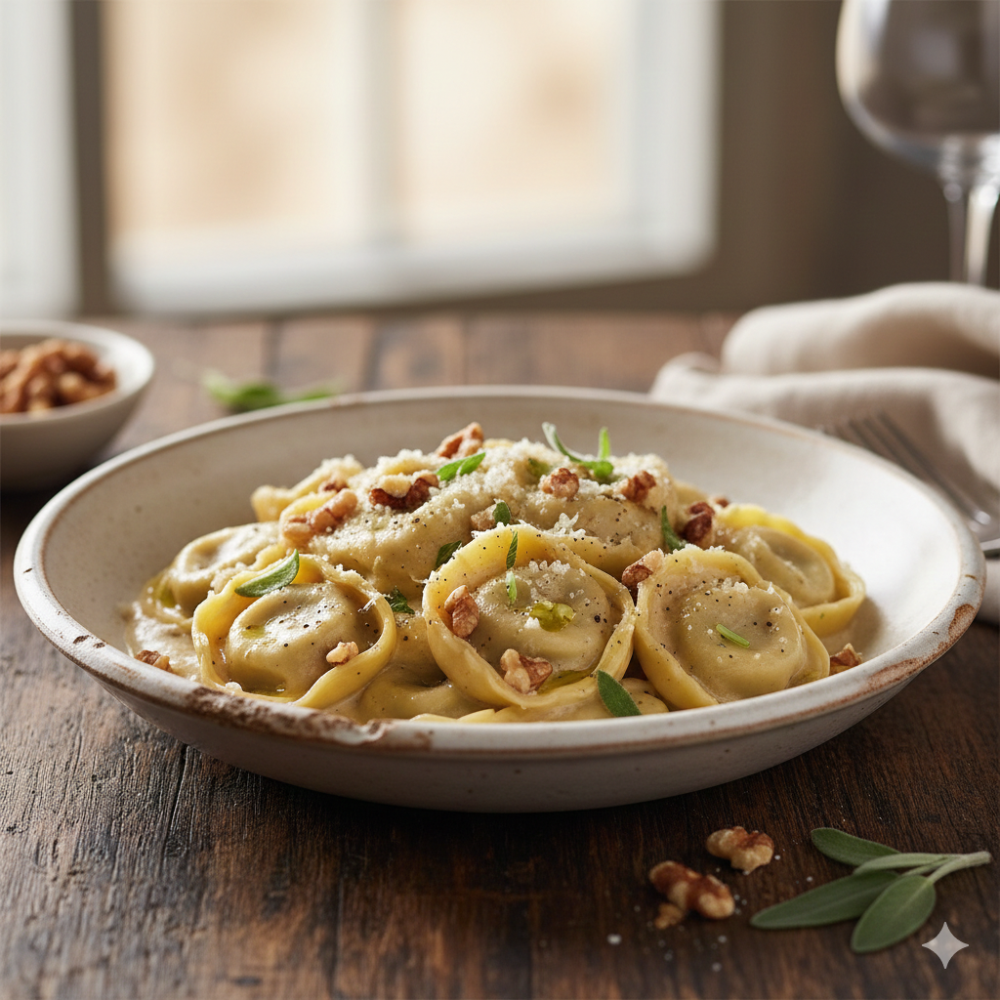

Tortellini in Walnut Sauce
Home

Description
A quick and sophisticated pasta dish that combines the earthiness of walnuts with a
creamy, savory sauce. Perfect for a cozy dinner when you want something that tastes
gourmet but takes less than 20 minutes to prepare.
Ingredients
- 1 package Tortellini (from the refrigerated section)
- 1 small Onion
- 1 clove Garlic
- 100 g Walnuts
- 1 tablespoon Butter
- 200 ml Cream
- 100 ml Vegetable broth
- Salt and Pepper
- Parmesan cheese (freshly grated)
Steps
- Finely chop the walnuts, onion, and garlic.
- Cook the tortellini in boiling salted water according to the package instructions.
- Melt the butter in a pan and sauté the onions and garlic until translucent.
- Add the chopped walnuts and toast them briefly.
- Deglaze with the vegetable broth and cream, then let it simmer for a few minutes until the sauce thickens slightly.
- Season with salt and pepper to taste.
- Drain the tortellini and toss them directly into the sauce.
- Tip: Serve with freshly grated Parmesan and a few whole walnut halves for garnish.